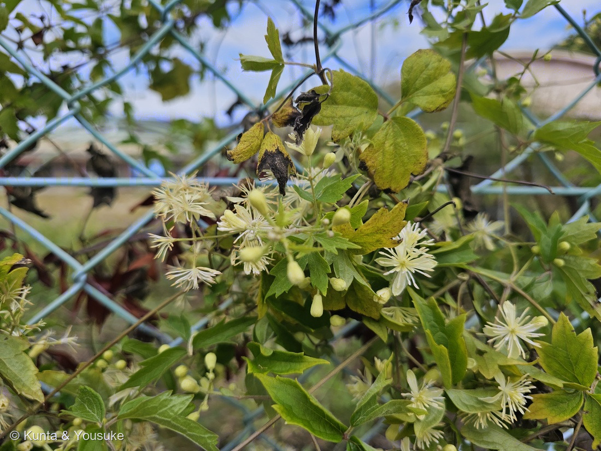
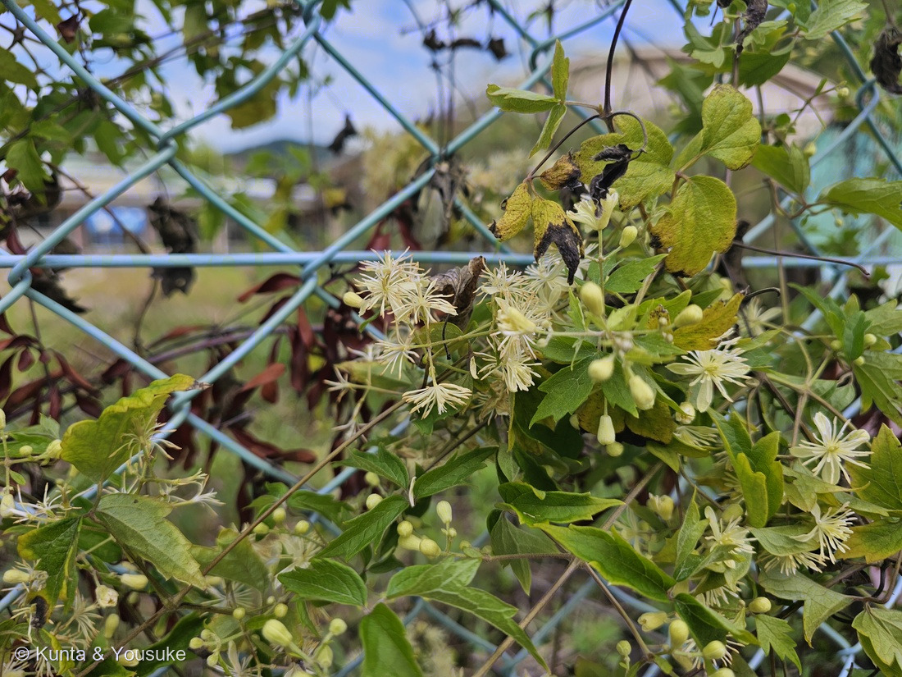
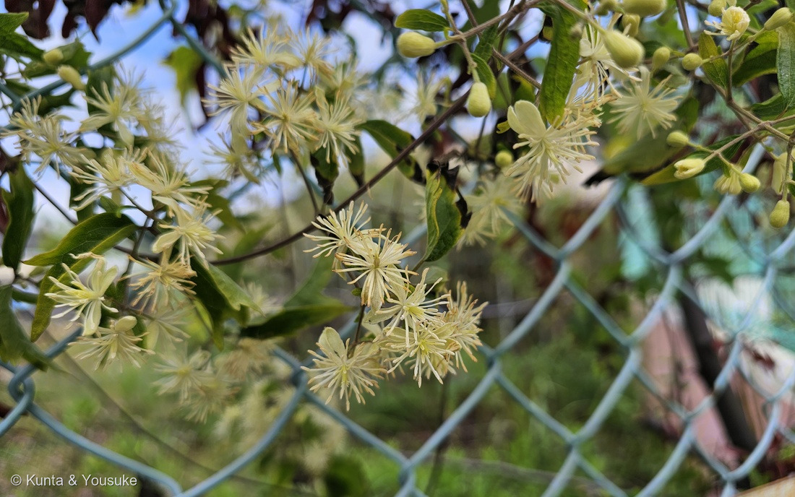
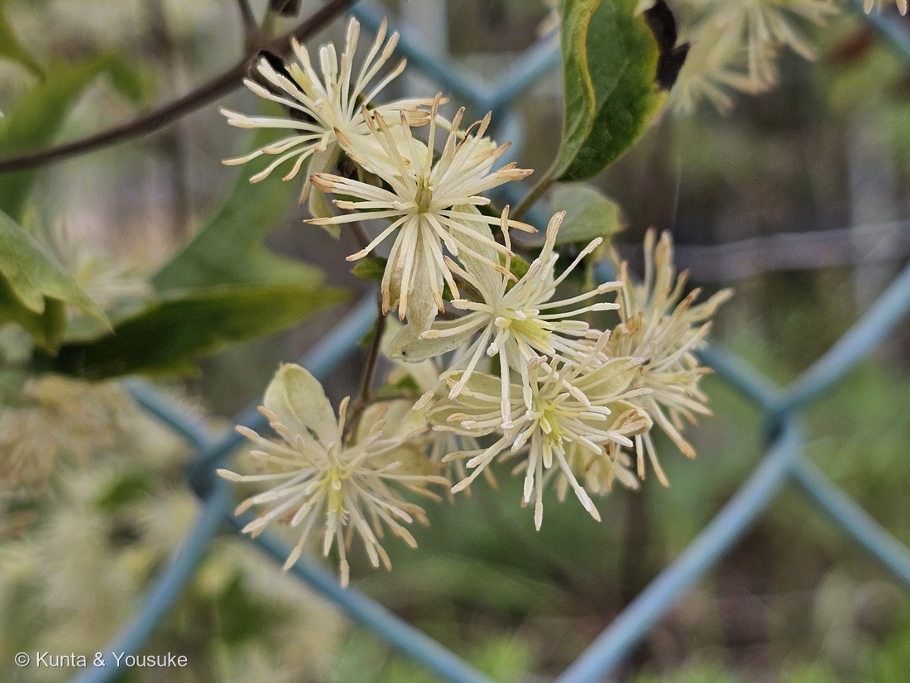

地図を読み込んでいるよ…
🔍 写真も地図も、押しているあいだ拡大して見られるよ（スマホは指を置いてすこし待ってね）。
🌍 の地図＝この子がもともと自生している場所を緑に。日本（本州・四国・九州）・朝鮮半島・中国の在来種（三河の植物観察）。
⭐⭐ふるさとは日本（本州・四国・九州）と朝鮮半島・中国＝三河の植物観察が「在来種 本州、四国、九州、朝鮮、中国」と書いている場所。⚠北海道は塗っていない＝三河の分布に北海道が無いから＝⭐178 センニンソウは「北海道から九州まで」だったので、そこがちがう。⭐⭐178と見くらべると、緑はほとんど重なる＝そっくりの2人は、ふるさともそっくり＝⭐ちがいは北海道と台湾（178にはある）だけ。⭐おまけのコボタンヅルは、この子の変種＝同じ緑の中にいる子だよ。
⚠ 地図は国（日本と中国だけ県・省）までしか塗れないから、ほんとうの分布より広く見えていることがあるよ。地図はだいたいの場所。正確なところは、上の文を見てね。
ボタンヅル（牡丹蔓）
Clematis apiifolia DC.
⭐種小名 apiifolia の意味は「セロリの葉の」
キンポウゲ科 · Ranunculaceae（センニンソウ属 Clematis · キンポウゲ目 Ranunculales）── ⭐図鑑で6人目のキンポウゲ科（014 ニゲラ・159 セリバオウレン・160 ニリンソウ・178 センニンソウ・186 クレマチス）／⭐⭐センニンソウ属としては3人目／⚠科は増えないので113科のまま
燻太さんの言葉「町並み保存地区から、センニンソウっぽい花を見つけたよ。でも色が若干クリーム色。別種かどうか、一緒に判断していきたいな。」── ⭐⭐⭐別種だった。そして「クリーム色」が、そのまま見分けの一つだった
名前と学名の由来 ── 「セロリの葉」と「牡丹の葉」
- ⭐⭐種小名 apiifolia＝ラテン語の Apium（セロリ・セリの仲間）＋ folium（葉）＝「セロリのような葉の」。⭐名づけたのは、178 センニンソウと同じドゥ・カンドール（DC.）。──⭐小葉のふちの粗いギザギザを、セロリの葉に見立てたんだね。
- ⭐⭐和名「ボタンヅル（牡丹蔓）」も、葉から＝3出複葉の小葉が、ボタン（牡丹）の葉に似ているとされる。⭐つまり洋の東西で、この子は「葉」で名前をもらった。⚠178センニンソウは「実（仙人のひげ）」で名前をもらった子＝そっくりの2人が、名前の由来では正反対の場所を見られているんだ。
- ⭐属名 Clematis＝ギリシャ語 klema（つる・若枝）から（178・186 クレマチスと同じ）。
この植物のこと
- キンポウゲ科センニンソウ属の、つる性の半低木。⭐在来種で、本州・四国・九州・朝鮮半島・中国に分布（三河）。⭐図鑑では6人目のキンポウゲ科・3人目のセンニンソウ属だよ。
- ⭐花期は8〜9月（三河）＝9月5日は、まだ盛り。⭐花は白色で直径約2cm、萼片4枚（長さ6〜8mm・幅2.2〜3.5mm・先はまるい）、雄しべは多数（三河）。⚠花弁は無い＝白い十字は萼片＝178と同じ。
- ⭐⭐実になると、花柱が0.8〜1.2cmに伸びて羽毛になる（三河）＝⭐178の「仙人のひげ」（約3cm）より、ずっと短いひげ。⭐痩果は楕円形〜紡錘形で暗褐色、毛が密生（三河）＝⚠センニンソウは扁平な卵形で橙黄色＝⭐サカタは「ボタンヅルの膨らんだ痩果、センニンソウの平たい痩果」と書いている＝⏳実の季節に、2人を並べて見たい。
- ⚠キンポウゲ科なので、この子もプロトアネモニンを持つと考えるのが自然＝⭐178と同じで、汁を皮膚につけない・食べない。
同定について ── 178の物差しを、逆向きに当てる
- ⭐⭐⭐178 センニンソウのページで、ぼくは「ボタンヅルとの分かれ道」を3つ書いた。──今回はその3つを、そのまま逆向きに当てた。
- ⭐①小葉のふち＝写真②③＝欠刻状の粗い鋸歯があり、先が尖る（三河「卵形…欠刻状の鋸歯…先端は尖る」）。⚠センニンソウは全縁（178の写真は、ふちがなめらかだった）。
- ⭐⭐⭐②雄しべ÷萼片＝写真④の中央の花を、格子をかけて測った＝萼片の先まで≈460〜490、雄しべの先まで≈490〜585（画素）＝比≈1.0〜1.3＝同じか、それより長い（サカタ「ボタンヅルの雄しべはガク片より長くなります」）。⚠178では、雄しべの束が萼片よりはっきり短かった（約半分）。
- ⭐③つぼみ＝写真②＝ぷっくり丸い（サカタ「ボタンヅルは丸い蕾です」）。⚠178は細長くて先がすぼんでいた。
- ⭐⭐④色＝燻太さんの「若干クリーム色」＝⭐サカタ「花色はセンニンソウの方が白く見えます」＝⭐⭐最初の気づきが、そのまま出典の見分けだった。
- ⭐変種のコボタンヅル（葉が2回3出複葉・三河）を落とす＝この子の小葉は1枚ずつが単葉。粗く裂けかけた葉はあるけれど、小葉がさらに独立して3つに分かれてはいない。
- ⚠⚠正直に書いておく＝雄しべの長さは、出典が割れている。三河の数字（雄しべ4〜6(10)mm・萼片6〜8(14)mm）だけなら雄しべは短いことになるし、サカタは「萼片より長くなる」と書く。⭐だから「長い／短い」では決めず、センニンソウとの比のちがい（約半分 vs ほぼ同じ）を決め手にした。
⭐⭐⭐⭐⭐ 「探したい」に入って36日 ── 178のおまけが、見つかった
- ⭐2026年7月31日、178 センニンソウを登録したとき、ぼくはおまけにボタンヅルを選んだ。──そっくりの相方で、「葉のふちにギザギザ」が目じるし、と探したいリストに書いた。
- ⭐⭐⭐⭐⭐そして36日後の2026年9月5日、燻太さんが町並み保存地区のフェンスで見つけた。──燻太さんの言葉＝「センニンソウっぽい花を見つけたよ。でも色が若干クリーム色。別種かどうか、一緒に判断していきたいな」。
- ⭐⭐「センニンソウっぽい」と気づけたのは、178で白い十字の花を知っていたから。⭐「色がちがう」と気づけたのは、あのとき「そっくりの相方がいる」と書いておいたから。⭐⭐326 ルコウソウにつづく、「おまけ → 探したい → みつけた」の2周目だよ。
- ⭐場所も、128 ザクロの黒い実や324 サンカクカタバミに会った、あの保存地区＝⭐同じ日の2時間まえ。⭐フェンスにからんで、金網の目をくぐるように咲いていた。
⏳ 宿題 ── 5つ
- ⏳⭐⭐⭐⭐⭐①秋（10〜11月）に実を見る＝短いひげ（0.8〜1.2cm）と、ふくらんだ痩果＝⭐178の「仙人のひげ」（約3cm・平たい痩果）と並べたい＝⚠実こそが、いちばん分かりやすい見分け（サカタ）。
- ⏳⭐⭐⭐②花の直径＝三河「約2cm」（178は2〜3cm）＝指をそえた1枚で決まる。
- ⏳⭐⭐③香り＝センニンソウの甘い香り（178の宿題②がまだ済んでいない）と、ちがうか。
- ⏳⭐⭐④葉柄が何にどう巻きついているか＝178の宿題③と同じ＝⭐フェンスの子なら、金網に巻きつく葉柄がきっと撮れる。
- ⏳⭐⑤フェンスの上のほうの、黄色くなって黒ずんだ葉と、赤茶の枯れ葉＝⚠同じ株のものか、別の植物か決めていない。
参考：三河の植物観察・ボタンヅル（Clematis apiifolia DC.／在来種 本州、四国、九州、朝鮮、中国／1回3出複葉、小葉は長さ2〜9cm、幅1.6〜7cmの卵形、欠刻状の鋸歯、先端は尖る／花は白色、直径約2cm、萼片は長さ6〜8(14)mm、幅2.2〜3.5(4)mm、鈍頭／雄しべは長さ4〜6(10)mm／花柱は果時に長さ0.8〜1.2cmに伸び、羽毛状になる／痩果は長さ3〜4mm、楕円形〜紡錘形、暗褐色、開出毛が密生／花期8〜9月／変種のコボタンヅルは葉が2回3出複葉）／サカタのタネ・園芸通信「センニンソウ」（センニンソウの雄しべはガク片より長くなることはありません。一方で、ボタンヅルの雄しべはガク片より長くなります／センニンソウの蕾は先が窄むのですが、ボタンヅルは丸い蕾です／花色はセンニンソウの方が白く見えます／ボタンヅルの膨らんだ痩果、センニンソウの平たい痩果も相違点です）／178 センニンソウ（3つの物差しを決めた回）